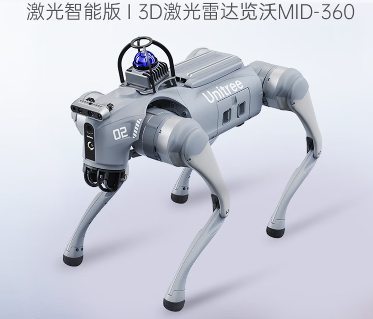

以宇树 Go2 Edu（激光智能版）为平台，搭载 Livox MID-360 激光雷达与 Intel RealSense D435i 深度相机，用于厂房、配电间等室内场景的自主巡检。12 个关节电机、约 15 kg 整机重量，能上下楼梯、穿过窄道、越过门槛——这些是人形和轮式都不擅长的。
MID-360 激光 + D435i 深度 · 越障 16 cm · 续航 2~4 h
Go2 出厂标配的是宇树自研的 4D 激光雷达 L1。本平台在采购时升级为「激光智能版」：3D 激光雷达换成 Livox MID-360，并加装 Intel RealSense D435i 深度相机。这两件决定了整个平台能做什么级别的感知实验。
360° 水平视场，竖直 −7°~52°，单帧覆盖范围远超传统机械式雷达。非重复扫描的轨迹会随时间逐渐加密，静态建图的点云质量尤其好。
D400 系列中的带 IMU 型号。全局快门 + 87° 广角，机器人在运动中也能保持深度稳定；内置 6 轴 IMU 让点云配准和视觉惯性里程计有了硬件基础。
以下为 Go2 EDU 官方规格，感知部分按本平台实际配置列出。
四足平台的四个关键指标，决定了它能不能进真实场景。
16 cm 落差、40° 斜坡，意味着它能在有台阶、有门槛的楼道里走动。轮式底盘在这些场景里会直接卡住，人形则受限于平衡能力。
MID-360 提供大范围的几何约束，D435i 在其失效时（长走廊、空旷厂房等特征稀疏场景）补充视觉里程计。两套感知互为备份，是巡检机器人能长时间稳定运行的保障。
15000 mAh 长续航电池，配合快充适配器。做一次完整的建图+巡检实验不需要中途充电。
可选 40~100 TOPS 算力模组，额定载荷 8 kg。上面能挂机械臂、云台相机、气体检测仪等任务载荷。
结合本平台的传感器配置，可以落地这四类实验与项目。
在厂房、配电间按预设路线巡航，用 D435i 读仪表盘、测设备距离，用 MID-360 在无 GNSS 室内建图定位。
MID-360 的 360° 视场 + 内置 IMU，非常适合跑 LIO-SAM、FAST-LIO 等激光惯性里程计算法，室内外都能建图。
ISS 2.0 智能伴随 + 视觉识别，做人员跟随、物资运输。四足的通过性让跟随不被台阶打断。
激光 + 深度双模态避障，研究复杂环境下的局部路径规划与动态障碍物规避。
四足步态、RL 运动控制、多传感器融合、ROS2 通信——每项都能拆成独立实验。
四足平台是机器人竞赛的常见硬件，载荷与算力余量足以支撑算法迭代。
户外实拍：Go2 在公园环境中全自主巡检，MID-360 负责建图定位，D435i 负责近距避障，全程无人工遥控。